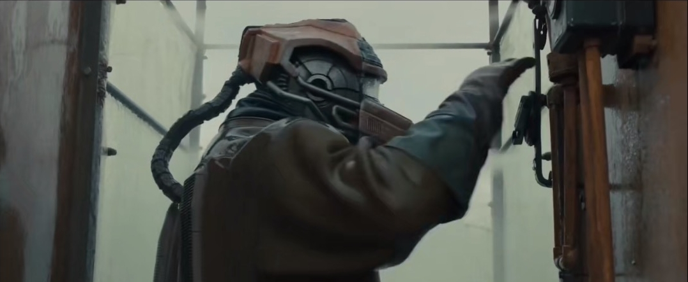

色彩与叙事
两种颜色的配色方案：首先有一个基本的问题：为什么选择两种主要颜色，而不是三种或四种？
配色的基本作用之一就是通过颜色讲故事。不同的颜色会对情绪（mood）产生不同的影响。传统的多思维方式是：红色代表愤怒，营造紧张气氛；蓝色、绿色令人舒缓；黄色充满活力，代表着生命；棕色带有朴实、中性色彩。
我们周围自然环境中的事物，例如大地、天空、树木、植被，其颜色都是舒缓而自然的。其它颜色则更容易调动人的情绪，可能是因为这些颜色不那么常见。所在有人类敏感的颜色，没有一个与我们的肤色相近。对摄像机来说，最简单也最困难的测试就是肤色测试。但凡画面中的肤色出现一点细微变化，很容易就能看出这是用便宜的摄像机拍摄的，观众可能说不上来哪儿不对，但他们能清楚感知到不协调的部分。很多电影人依旧使用胶片拍摄，就是因为他们渴望胶片呈现的肤色效果。
《星际探索》（Ad Astra）使用胶片拍摄，由摄影师霍伊特·范·霍特玛（Hoyte van Hoytema）执镜，其中的肤色在任何彩色光、任何场景下都无可挑剔，即便是在过曝或者曝光不足的情况下。
当电影制作者选择颜色时，都会优先配色对肤色的影响。墙是红的不代表皮肤可以是红的，皮肤必须看起来自然。《天使爱美丽》（Amelie）的主色调为铜绿色，但画面中肤色依旧自然，同样成功的还有《黑色帝国》。
只有制作设计（production design）才能弥合肤色和其它颜色的割裂感。制作设计是创造场景甚至是创造世界的艺术。《银翼杀手》（Blade Runner）和《星际探索》就因其制作设计的独特和沉浸体验脱颖而出。设计潮流是为所有场景确定一个主要颜色，是观众会注意到的颜色，而单一颜色容易使观众疲劳，这就需要引入第二个颜色来产生对比。
黑白电影将观众的注意力集中到画面中的物体而非颜色上来，这种特质是早期彩色电影难以拥有的，而现在我们可以通过两种颜色来实现。两种颜色形成了饱满、统一的画面，定义着角色所处的世界。
美术指导和摄影师决定着物体所呈现的颜色，包括服装、道具在内，一切都经过精心安排，从而达到最终效果。
橙色加青绿色是一种常用的自然的色彩组合，因为它们也是现实生活中的两个主要颜色。天空和海是蓝色的，太阳和火光是暖橙色的，当然也包括肤色。通过增强上述颜色并削弱其它颜色，就能实现某种有颜色的“黑白”画面。使用这一配色方案的另一目的，在于这橙色和青绿色位于色阶两端，互为对比色。
美术指导总是试图采用两种对立或和谐的颜色应用于所有场景，与导演共同为电影制定统一的整体计划，即色彩叙事。第二个颜色增加了深度，强调主要颜色，承担表达相应故事情节的情绪的功能。
《银翼杀手2049》（Blade Runner 2049）中最重要的颜色是黄色。黄色贯穿全片，代表信息、醒悟或是主角K发现线索之处。每当他有新发现，黄色就会出现，就像一个路标。
影片中白天的场景则是铁锈色，灵感来自孟加拉国和印度的沉船场。服装也是铁锈色。夜晚的世界呈蓝色和灰色，代表着混乱，也是向原版《银翼杀手》的致敬。

镜头组的另一种主色调是绿色，当场景中出现了乔伊在内的人造物或华莱士制造的产品时，画面为绿色。最后是白色。白色代表着故事的最终真相也蕴含着宁静的意味，是K找寻的答案。
因此，当我们看到运用两种颜色配色方案的场景设计，便可以确定导演在用颜色进行有力的叙事，充分发挥颜色在电影中的作用。